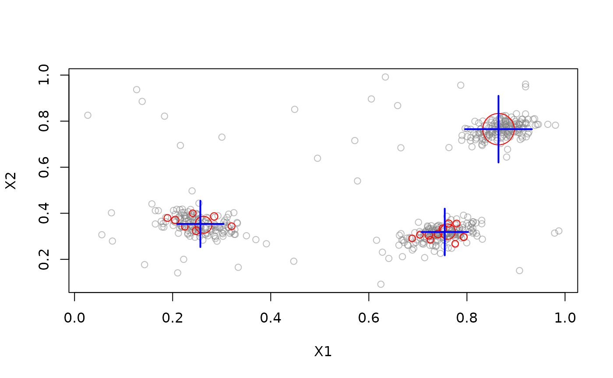
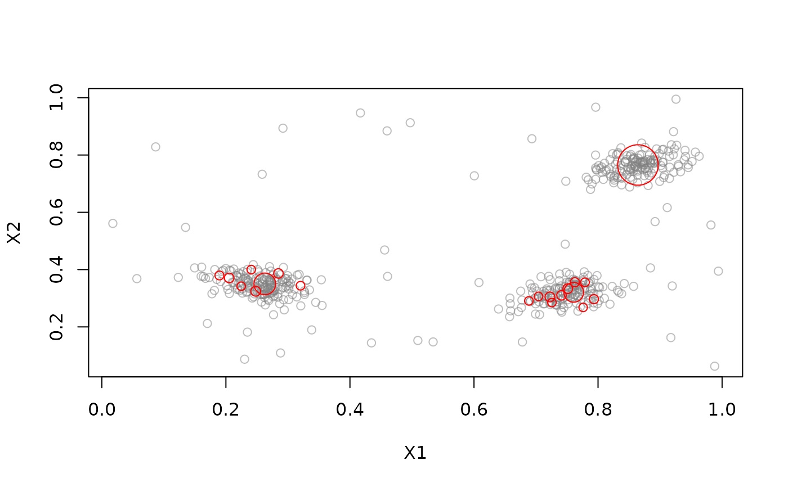
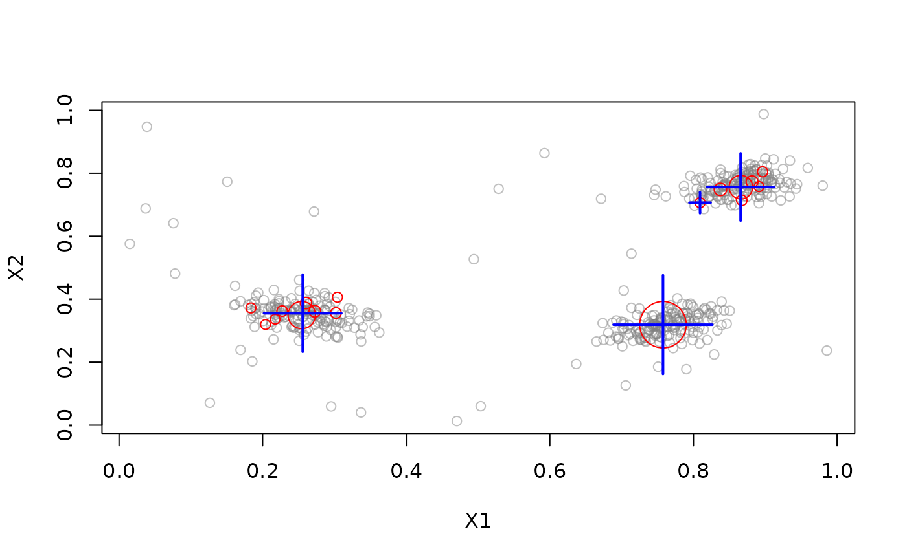

Interface for the DenStream cluster algorithm for data streams implemented in MOA.
Usage
DSC_DenStream(
epsilon,
mu = 1,
beta = 0.2,
lambda = 0.001,
initPoints = 100,
offline = 2,
processingSpeed = 1,
recluster = TRUE,
k = NULL
)Arguments
- epsilon
Maximum radius of a micro-cluster. Must be between 0 and 1.
- mu
Minimum weight required for a core micro-cluster.
- beta
Weight multiplier used to identify outlier micro-clusters. Must be between 0 and 1.
- lambda
Decay constant.
- initPoints
Number of points used to initialize the algorithm with DBSCAN.
- offline
Multiplier applied to
epsilonfor reachability reclustering. Must be between 2 and 20.- processingSpeed
Number of incoming points per time unit, used for decay. Must be between 1 and 1000.
- recluster
If
TRUE, apply offline reachability reclustering.- k
If specified, choose a reachability threshold to produce this number of macro-clusters.
Value
An object of class DSC_DenStream (subclass of stream::DSC,
DSC_MOA, stream::DSC_Micro) or, for recluster = TRUE, an object
of class stream::DSC_TwoStage.
Details
DenStream reclusters micro-clusters using DBSCAN-style reachability. The
threshold is epsilon * offline (with offline = 2 by default).
If k is specified, single-link hierarchical clustering chooses a
reachability threshold that produces k macro-clusters.
References
Cao F, Ester M, Qian W, Zhou A (2006). Density-Based Clustering over an Evolving Data Stream with Noise. In Proceedings of the 2006 SIAM International Conference on Data Mining, pp 326-337. SIAM.
Bifet A, Holmes G, Pfahringer B, Kranen P, Kremer H, Jansen T, Seidl T (2010). MOA: Massive Online Analysis, a Framework for Stream Classification and Clustering. In Journal of Machine Learning Research (JMLR).
See also
Other DSC_MOA:
DSC_BICO_MOA(),
DSC_CluStream(),
DSC_ClusTree(),
DSC_DStream_MOA(),
DSC_MCOD(),
DSC_MOA(),
DSC_StreamKM()
Examples
# data with 3 clusters and 5% noise
set.seed(1000)
stream <- DSD_Gaussians(k = 3, d = 2, noise = 0.05)
# use Den-Stream with reachability reclustering
denstream <- DSC_DenStream(epsilon = .05)
update(denstream, stream, 500)
denstream
#> DenStream + Reachability
#> Class: DSC_TwoStage, DSC_Macro, DSC
#> Number of micro-clusters: 20
#> Number of macro-clusters: 3
# plot macro-clusters
plot(denstream, stream, type = "both")

# plot micro-clusters
plot(denstream, stream, type = "micro")

# reclustering: Choose reclustering reachability threshold automatically to find 4 clusters
denstream2 <- DSC_DenStream(epsilon = .05, k = 4)
update(denstream2, stream, 500)
plot(denstream2, stream, type = "both")
